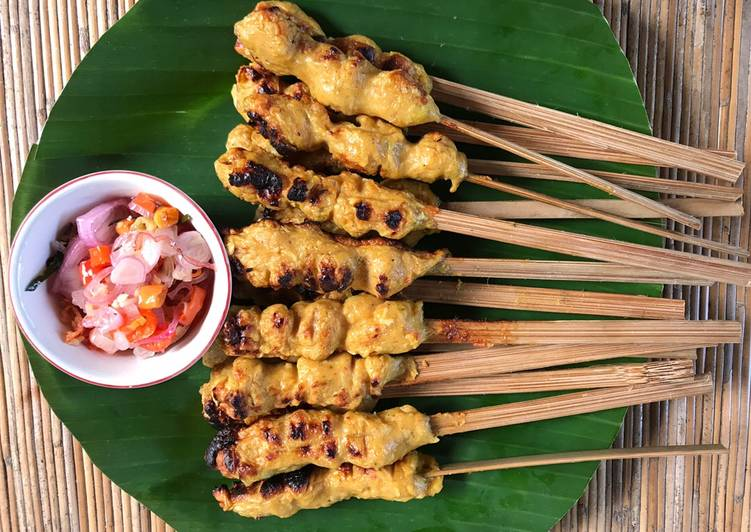

Sate Lilit Khas Bali

Bahan :
- 300 gr daging ayam (giling)
- 100 gr kelapa parut
- 2 sdm tapioka
- 1 butir telur ayam.
- 5 siung bawang merah
- 4 siung bawang putih
- 3 biji kemiri (sangrai)
- 1 cm kunyit (bakar)
- 2 cm kencurv
- 1 cm lengkuas
- 1 cm jahe
- 5 buah cabe rawit (boleh lebih)
- 1 cm terasi (bakar)
- secukupnya garam & merica
- 20 batang bambu atau serai
Cara masak :
- Haluskan bawang merah,bawang putih, kunyit, cabai, kemiri, jahe, kencur, lengkuas dan terasi
- Campurkan ayam giling,telur,tapioka,dan kelapa. Beri garam dan merica secukupnya
- Tumis bumbu halus hingga harum lalu campurkan kedalam adonan daging ayam. Aduk rata
- Panaskan Grill Pan dengan api sedang. Ambil sedikit adonan. Masak hingga matang. Lalu cicipi rasanya hingga pas
- Jika rasa sudah pas. Ambil adonan secukupnya dan lilitkan pada batang Bambu atau Batang serai. Lalu panggang di Grill Pan hingga matang
- siap dihidangkan